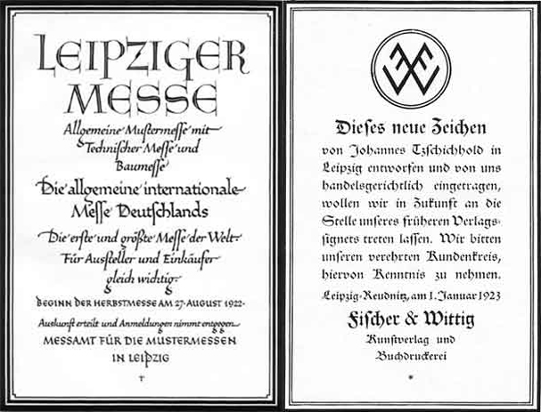
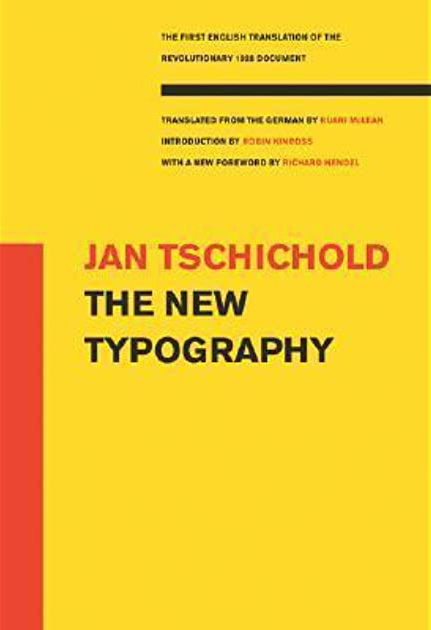
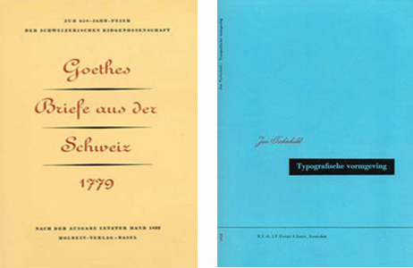
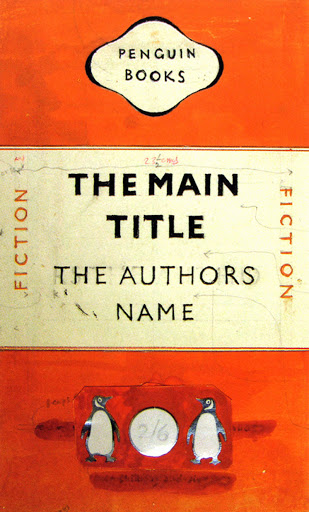
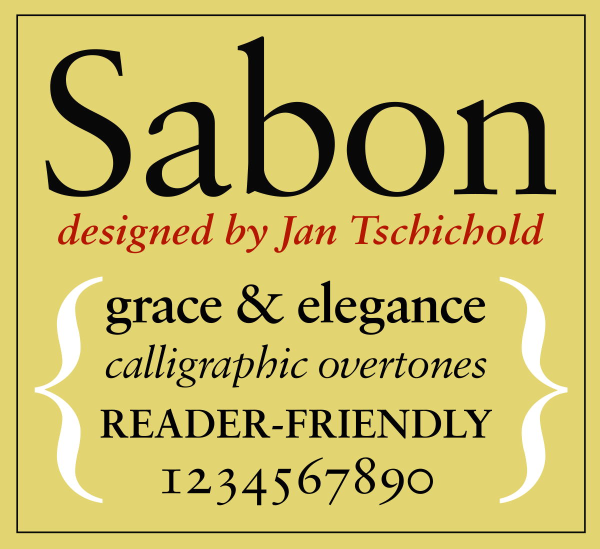

The Evolution of Jan Tschichold
Introduction
From publishing some of the most influential modern Typographical books to redesigning the classical and elegant Penguin books, the avant garde German typographer, Jan Tschichold, left his mark on Typography and Design. With an unmeasurable self-worth and strong opinions, Tschichold burst onto the scene, leading movements that were to shape standards and redefine typography for over 40 years.
Early Life
Born in Leipzig, the centre of the German book trade, the young Jan Tschichold, son of a signwriter, instinctively became interested in print and typography. He began studying in the “Leipzig Academy of Arts” in 1919 and developed extraordinarily quickly. Soon afterwards he got a job creating work for the Leipziger Messe, which at the time was the largest trade show in Europe, and set up business as a typographic consultant
Leaflet created for Leipziger Messe, 1923
Surrounded by the development of the new “-isms” in art, Tschichold became curious. The Bauhaus, founded by architect Walter Gropius as a school of arts in the nearby city of Weimar, opened their doors for a public exhibition in 1923, featuring works prominently imported from Russian Constructivism and the Dutch De Stijl movement. The Bauhaus school of art was revolutionary in the use of design and typography with one of their main mantras being “art and technology, a new unity”. In comparison to his work up to this point, the work he saw must have been mind-blowing to a young man who’s work incorporated classical serif font with little structure. Jan Tschichold remembered coming away from the exhibition “in a state of great agitation” after reading a quote by László Moholy-Nagy.
“Typography is communication through print”
—László Moholy-Nagy,1923
In response to what he had seen he developed a completely new style incorporating rigorous structure and composition, and layouts filled with white space, straight lines, and thick rules. With his newfound inspiration or possibly hatred for the sloppy layouts of his time, he began developing and promoting propaganda for this new typography movement. He travelled Europe sharing his ideas with designers and typographers alike, eventually ending up in Berlin where he published his first major work, “The New Typography” in 1928.
The New Typography
The New Typography, 1928
Jan Tschichold’s first book, “The New Typography”, which remains published and translated into English to this day, is a masterpiece of modern graphic design, amassing huge popularity among designers and printers all around Europe. His revolutionary ideas challenged traditional practices and pushed the boundaries of what was thought to be possible. With heavy inspiration from the work of teachers at the Bauhaus, Tschichold set forth rules for the standardization of modern type practices, including paper sizes and the use of hierarchy in the development of new typographic works. Alongside this, he condemned the use of all typefaces except for sans serif promoting his manifesto that
“The purpose of all typography is communication”
—Jan Tschichold,The New Typography,1928
This quote evidences the effect that the Bauhaus’ Moholy-Nagy had on Tschichold as a designer. At this point Tschicholds saw what was to be the future and rapidly adapted and adopted the movement becoming one of the leading figures associated with new typography. However, with the practice of this new modern movement came unwanted attention. During this time the Nazi came to power and took to destroying anything that challenged their ideas, this led to them capturing and imprisoning many modernist designers, Tschichold being one. Luckily, with the help of German Police officer, he escaped over the border where he found no trouble in finding a job due to his reputation and previous teaching post. As war began to rage, work became limited in demand forcing him to direct his creative energy into other directions. During this time, he published several more books, one of which being the highly anticipated, “Typographic Design” which was released in 1935.
A Change in Pace
Towards the end of the 30’s, Jan Tschichold began to stray away from the work he created during the Bauhaus and many of the rules he wrote in his first book “The New Typography”. These two books perfectly depict the continuous evolution of his design ideas and the transition back to a more traditional format with the inclusion of serif fonts and symmetrical design.
Goethes briefe aus der Schweiz,1941
Typographishe vormgeving,1938
With his return to a classical refined style, Tschichold received an invitation from Allen Lane of Penguin Books to redesign and create a set of guidelines for their existing and future books. Penguin was at that time successful and rapidly growing. They lacked only one key feature: design. Tschichold understood the importance and responsibility of this undertaking, being the first to redesign such a large amount of content. This was only feasible due to the new technology available in mass printing, and with this came the necessity to keep the key characteristics of the Penguin books. After creating a four-page guide concerning everything from margins to the usage of italics, punctuation to footnotes, and a new grid system, Tschichold received some resistance from fellow designers and printers working below him. Although in comparison to his previous works this was a mild change, the British designers took great insult in a German telling them how to design their books.
Design ideas for penguin rehaul, 1948
A year after starting work at the Penguin studios, his colleagues began to listen and apply the rules and guidelines he set out, prompting the reworking of the covers. Beginning in 1948, different weights of Gill Sans were used removing the original extra font, Bodoni Ultra, which was used for the title. Alongside this, the colour of the infamous orange strips was changed; strict rules for the tracking of text was established; the Penguin logo was redrawn; and all fonts where adjusted in size to use the golden ratio. Although he continued his use of regimented layout throughout, Jan Tschichold’s take on the Penguin books was incomparable to any of his previous work. Yet as much as Tschichold was a master of typography and layout, he also paid close attention to how the book felt in one’s hand. Every detail was considered, the weight and grain direction of the paper, the stiffness of the cover and the strength of the binding. After wartime restrictions and the restrictions of paper were lifted, Tschichold was able to further perfect the quality of the books that cost the equivalent of 15 pence.
During his time with Penguin Books, he personally oversaw the creation and design of 500 books. This stage of his Tschichold’s career changed how design was approached forever. The use of standardization and design guidelines became a key part in the development of new design and layout for companies, and his symmetrical layout inspired the creation of books and websites of the future.
In 1949 Jan Tschichold left his position at Penguin Books and returned to Switzerland where he spent his last remaining years writing, giving talks, and gaining recognition for his work. Then after many years of development Tschichold released his “Sabon” font that would go on to become an instant addition to classical typographic design. A few years later Jan Tschichold died in August 1974.
Jan Tschicholds Sabon font, 1967
Conclusion
Each phase of Tschichold’s career has had a lasting influence, starting with his early, uncompromising modernist designs which brought together different aspects of the Modern Movement and Bauhaus. These designs remain instantly recognisable and widely imitated by designers and artists alike. His theoretical approach to design, developed during his first few years in Switzerland, on the spacing of letters and words, the sizes of pages, and the pairing of typefaces, are still followed to this day. His analysis of book proportions, lettering and typefaces are on shelves in design studios and copies of his books are still available in bookstores worldwide. Jan Tschichold’s work has arguably left the greatest influence on book design as we know it today and his rules continue to be adjusted and applied to websites. The rapid change in Tschichold’s style throughout the years, and the evolution of his taste, is evident throughout his work and the impact it left on himself and the whole world of design was monumental. Although he never truly settled on one style, his experience with traditional fonts and layouts and development of modernism, allowed him to create some of the best set of guidelines for designers in the 20th century. Guides that remain influential 70 years later.
Jan Tschichold has changed my perspective on the process of design, not through his work but the acceptance of development and change. Throughout his life he has accepted the evolution of his own work and critiqued his previous work. I find his ability to reflect on the work of his younger self, accepting his mistakes, is what made him the great and influential designer he was.
Bibliography
| Baines, Phil. Penguin By Design. 1st ed. London: Allen Lane, 2005. Print. | McLean, Ruari. Jan Tschichold, Typographer. 1st ed. London: Lund Humphries, 1975. Print. |
| Meggs, Philip B and Alston W Purvis. Meggs' History Of Graphic Design. 5th ed. Hoboken, N.J.: John Wiley & Sons, 2012. Print. | Tschichold, Jan. Asymmetric Typography. 1st English ed. Toronto: Cooper & Beaty, 1967. Print. |
| Tschichold, Jan. The Form of the Book. 1st English ed. London: Lund Humphries, 1991. Print. | Tschichold, Jan. The New Typography. 1st English ed. Berkeley: University of California Press, 1998. Print. |
| Tschichold, Jan. Treasury of Alphabets and Lettering. 1st English ed. Hertfordshire: Omega Books Ltd, 1985. Print. | Charchar, Alexander. “Jan Tschichold’s Inspiring Penguins”. retinart.net |
| Charchar, Alexander. “Jan Tschichold — Typographic Genius”. retinart.net | Flask, Dominic. “Jan Tschichold : Design Is History”. designishistory.com |
| Hollis, Richard. “Jan Tschichold: A Titan of Typography”. theguardian.com | “Tschichold's New Typography”. designhistory.org |